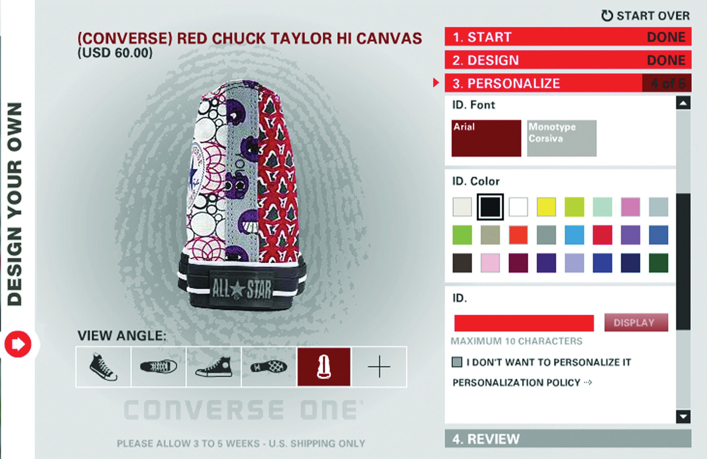
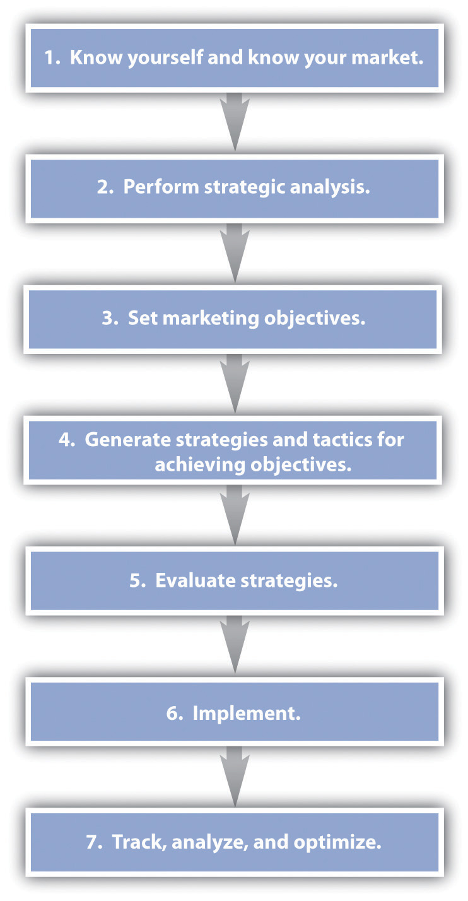
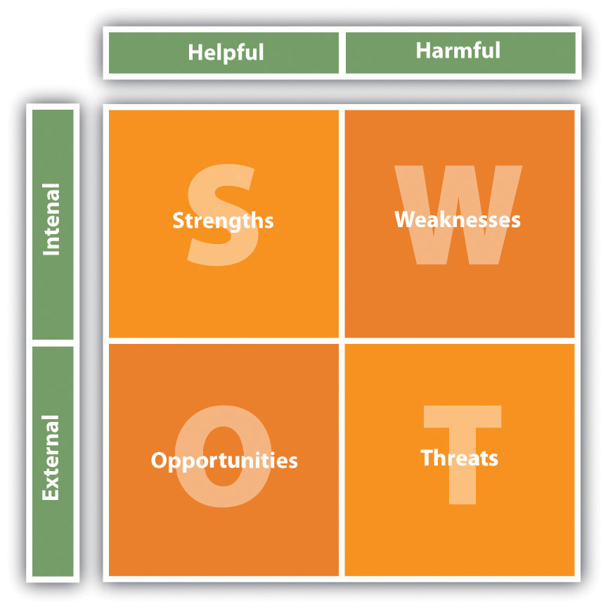
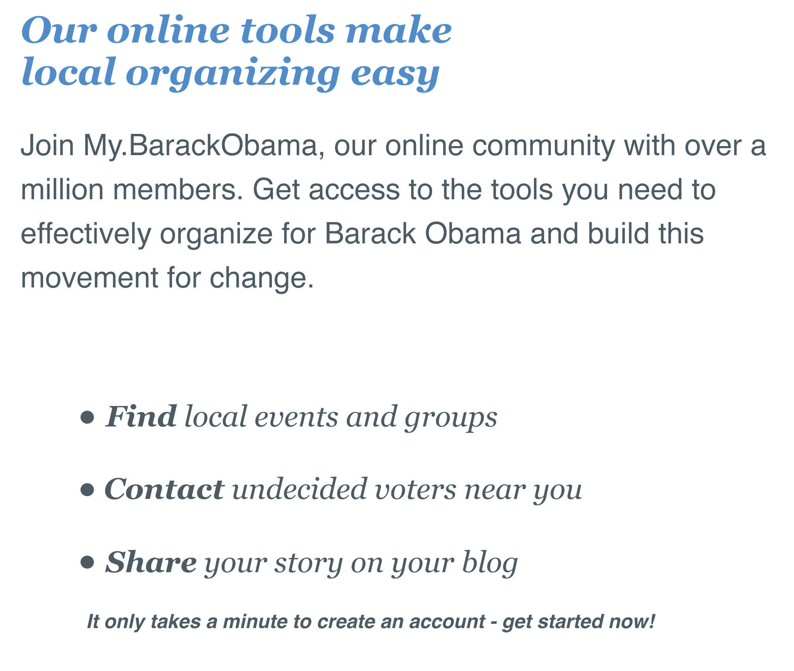
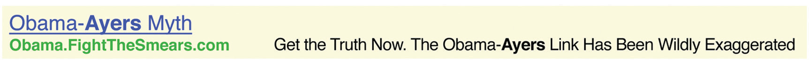

A strategy is a long-term plan of action aimed at achieving a particular outcome. Tactics refer to the immediate actions taken to execute a strategy. While most of the chapters in this textbook refer to the tactics that the Internet has afforded to marketing, the essential first step to executing any online campaign is in the planning: strategy.
“Strategy” comes from the Greek strategos, which itself is derived from two words:
“Tactic” also comes from Greek: taktika for deploying or arranging.
In wars and business, a strategy usually intends the same outcome: winning.
Treatises on strategy abound. The Art of War was written by Sun Tsu in the sixth century B.C., and this ancient Chinese text on military strategy often forms the foundation of business strategy today. Move forward a few millennia, and a course in marketing will include Porter’s five forces, McCarthy’s four Ps, and Humphrey’s SWOT analysis. At the time that the framework for the Internet was being researched and developed, economists and academics were laying the foundation for principles still leading marketing thought today.
The Internet has had a far greater impact on marketing and business than the ubiquitous e-mail newsletter and the need for search engine optimization (SEO). It is not just the way in which products and services can be marketed that has changed, but new products and services are being developed as well.
Figure 19.1 Four Types of Markets

The Internet has changed the types of products that can be sold, has changed the market for products in terms of geography, has had a huge impact in the way products are sold and marketed, and has seen a significant shift in the balance of power between businesses and consumers. Where marketing once was seen as a one-way broadcast channel, with customer wants and needs driven by focus groups, today effective marketing is based on a two-way conversation that happens person to person.
However, the Internet does not necessarily mean throwing out the rule book of marketing and business foundations and principles. Instead, the Internet provides a new environment in which to build on these principles. Profit is still revenue less cost. The Internet does not change that.
McCarthy’s four Ps of marketing are product, price, placement, and promotion. Developing technology, naturally, has an effect on all of these, and the Internet in particular has seen fundamental shifts not only in the means available to promote products but also in the placement, or distribution, of products. Although tools for research, retention, distribution, and product creation have changed dramatically, the fundamental principles of marketing still guide strategyA set of ideas that outline how a product line or brand will achieve its objectives. This guides decisions on how to create, distribute, promote, and price the product or service..
Products and services are what a company sells. From fast-moving consumer goods to digitalAvailable in electronic form; able to be manipulated and read by a computer. products such as software to services such as consultancy, the Internet has allowed for a plethora of new products.
Technology allows for mass customization of products, seen in a growing trend of letting customers customize goods online before they are created. For example, NIKEiD (http://nikeid.nike.com) and Converse (http://www.converse.com) both allow customers to create their own trainers based on a number of preset options, which will then be manufactured to the customer requirements. In a similar fashion, computer products can be built to specifications, as the costs of offering this type of service to customers is reduced by the Internet.
Figure 19.2
Converse allows customers to create their own shoes.
Digital products can exist because of the Internet. The very framework of the Internet allows for products such as software and digital music to be distributed. The Internet as a distribution medium is what makes these products possible.
With customers able to easily access pricing information from a number of suppliers, the Internet is growing a market of near-perfect competition.Michael E. Porter, “Strategy and the Internet,” Harvard Business Review 9, no. 3 (March 2001): 62–78. The prevalence of search engines and of shopping comparison Web sites, such as http://www.pricerunner.com and http://www.nextag.com, make it easy for customers to compare product prices across a number of retailers. The temptation for companies to differentiate themselves on price has led to decreased prices for many commodities, from the regularly reduced pricing of books on Amazon.com to ticket prices on low-cost airlines such as EasyJet (http://www.easyjet.com) in Europe.
Particularly for digital products and services, the Internet gives companies access to a global marketplace. Product distribution and markets no longer have to be dictated by location. With efficient delivery and shipping channels, products that are not digital can also benefit from a far wider marketplace. The Internet allows the basic foundations of mail-order businesses to flourish online with a catalog that is cheaper to produce and update and cheaper to distribute: a Web site. In the travel industry, travel agents stopped issuing paper tickets as of May 31, 2008.“The End of the Paper Airline Ticket,” USA Today, June 1, 2008, http://www.usatoday.com/travel/columnist/grossman/2008-05-30 -paper-tickets_N.htm (accessed June 20, 2010); “Fact Sheet: Electronic Ticketing (ET),” International Air Transport Association, June 2010, http://www.iata.org/pressroom/facts_figures/fact_sheets/Pages/et.aspx (accessed June 23, 2010). Nearly all airplane tickets are now e-tickets.
An API is an application programming interface. Essentially, an API gives instructions and rules for communicating with another program or database. This allows, for example, different companies and developers to build different front-end systems that all communicate with the same database.
Technology such as APIs (application programming interfaces), SOAP (simple object access protocol) services, RSS (really simple syndication), and XML (extensible markup language) allow information and services to be distributed throughout the world. For example, the API for a hotel reservations database, Starfish Luxury Travel Distribution (http://starfishinteractive.com), allows a diverse range of Web sites to offer instant online bookings for hotels in the inventory. Partners with booking engines include http://starfishinteractive.com, http://www.spaworld.tv, and http://www.timesonline.co.uk.
This is both a huge opportunity and a huge challenge for businesses. On the one hand, it can allow niche products and markets to flourish in a global space. On the other hand, it can be tempting for a marketer to try to reach too many markets at once. A global marketplace is also not yet fully supported by national banking and tax legislation.
The Internet as an information and entertainment medium naturally lends itself to be used to promote products. The online promotional mix is an extension of the offline but with some significant differences: online promotion can be tracked, measured, and targeted far more sophistically than offline. Advertising, personal sales, promotions-based marketing, and public relations are tacticsSpecific details or parts of a strategy that will contribute to accomplishing a goal. Can be methods or actions. that can all be conducted through the online medium.
Well-known marketing guru Seth Godin says that marketing is actually about five elements:
But Seth Godin is not the only smart marketer challenging the four Ps. Idris Mootee put forward four new Ps for marketing in the connected environment:
Databases and the use of cookies to remember Web visitors allow for online experiences to be tailored to particular Web visitors. Amazon makes use of personalization to recommend books to customers based on their past purchases.
With the growth in social media and consumer-generated content, customers are demanding, and taking, a stake in the brandsA distinctive name or trademark that identifies a product or manufacturer. that they use. Savvy companies can encourage participation through onsite reviews and allowing customers to upload images and video, and all companies should be aware of the many ways that consumers are participating.
Peer-to-peer communities can be seen to work with customer participation. Through social media, existing customers can be a company’s greatest asset or greatest detractor. Equipping an engaged and active customer base with the tools to spread a message should be an integral part of a long-term eMarketing strategy.
The connected nature of the Internet allows for every action online to be tracked, measured, and stored. Huge amounts of data, both anonymous and identifiable, are being stored daily. Analysis of these data can provide insight into solving marketing problems. For example, in PPC (pay-per-click) advertising, data are gathered that over time will indicate the optimal keywords and maximum CPC (cost-per-click) bids for effective bidding.
Godin’s five marketing elements are reminiscent of The Cluetrain ManifestoA set of ninety-five theses organized as a call to action for businesses operating within a newly connected marketplace.’s premise that “markets are conversations,” and both highlight the importance of marketing as people talking to people. This is not a new phenomenon brought on by the World Wide Web. Instead, the Web has served to act as a global focus group, with participants eager to share their thoughts, discoveries, likes, dislikes, and any other sentiment.
Mootee’s four Ps focus on what technology brings to the original marketing mix. Technology has allowed for mass customization, not just in marketing messages but also in content and product creation. It has seen brands that allow customer participation in spreading and even creating their messages and products succeed. The growth of social networks online and the recognized importance of product reviews in the buying cycle are reflected in peer-to-peer communities. Lastly, the Internet is useful in tracking and gathering data, which can be mined and analyzed for opportunities for growth.
What recent approaches to marketing strategy have in common is one growing theme: customer-centric marketing.
The strength of the Internet is demonstrated in the way it underlines connections. The very fabric of the Internet is based on hyperlinks—being able to link from one document to another. These technical connections are mirrored in the need for marketing to appeal to customer’s feeling of connection in the social sense.
Customer-centric marketing infers that by understanding the needs of the customer first and foremost, business outcomes will be achieved. Looking at the marketing mix from a customer-centric perspective should result in products and strategies that are meeting the needs of potential customers, as opposed to a need to invest in expensive, interruptive advertising to convince customers of a need that they do not have.
Products and services should be designed from a customer perspective based on their needs.
When considering pricing from a customer perspective, it is tempting to believe that the lowest price is best. While that can attract customers in the short term, focusing on the value of the product and the services offered with it is a better strategy for long-term growth. The customer approach to pricing considers value. The key is to build a long-term cost advantage.
The customer-centric approach to placement recognizes that you cannot dictate the manner in which customers find you online: from the search engine and keywords they could use to find your service to the browser and device they are using when accessing your Web site.
The Internet was not created as a marketing tool: it was created to share information. The number of people accessing the Internet, the amount of time spent online, and the commerce that takes place online make it an attractive marketing environment.
The following are the traditional four Ps of marketing:
The following are the new four Ps of marketing, according to Idris Mootee:
Seth Godin argues that marketing is about five elements:
Figure 19.3 Steps to Creating a Strategy
An eMarketing strategy should not be created in isolation from an offline strategy. Instead, marketers need to take a holistic view of all business objectives and marketing opportunities. Offline and online activities should complement each other, both having the potential to reach different audiences in different ways. However, the Internet is exceptionally useful as a research and information tool in the strategy process.
The starting point for any business and marketing strategy is to know who you are. “You” refers to the organization as a whole (although, of course, a little bit of self-discovery is always advised). While this can, and should, be readdressed periodically, start by looking at what the business problems are right now so that a strategy can be developed that solves these problems:
With a solid understanding of where the organization is right now, further analysis systematically evaluates the organization’s environmental and social context, objectives, and strategies so as to identify weaknesses and opportunities.
Porter’s five forces analysis is useful in understanding the attractiveness of the market in which an organization is transacting. However, this framework for analysis was developed before the Internet, which has disrupted the markets in which we operate.
Production and distribution costs in many industries have been drastically lowered; the barriers to entry and costs of switching are reduced. This means that there are more competitors in the market as the barriers to entry for new organizations are reduced and that cost is less likely to inhibit customers from switching to a competing product as there are less likely to be high costs associated with doing so. Perhaps most importantly, the bargaining power of end users is increased as they have greater access to information when making a purchase decision.
Often, the Internet migrates competition primarily to price.Michael E. Porter, “Strategy and the Internet,” Harvard Business Review 9, no. 3 (March 2001): 62–78. This means that organizations seek to attract and retain customers solely through offering services and goods at a lower price, though this is not necessarily the best strategy for companies to follow. Strategic differentiation comes from the value that a company can provide to a consumer.
Figure 19.4 Porter’s Five Forces

When analyzing competitors, it is not only product and price that lead the discovery process. While there may be obvious competitors in the same industry, an organization needs to consider what (or who) else may be vying for consumers’ attention and valuable search engine traffic.
In identifying competitors, analyze the needs of your customers and determine how else customers might fulfill those needs. Products and services are not only competing for customers’ money: they are fundamentally competing for customers’ attention.
Considering the customized Converse shoes, the customers’ needs are not likely to be that they have to cover bare feet. Instead, the shoes are fulfilling a customer’s need for individuality and self-expression. NIKEiD is an obvious competitor, but so is a service like Face Your Manga (http://www.faceyourmanga.com) that allows Web users to create custom manga avatars (or computer users’ representations of themselves, which are shown in the form of icons or 3D characters) to use online.
Marketing objectives are the desired outcomes of the marketing planA written document detailing the actions necessary to achieve marketing objectives.. What are the specific goals that will indicate the success of the marketing strategy?
These should be unique to an organization and are based around the outcomes that will make money for the organization. This is a strategy, so the focus is on long-term success. Establish milestones that will indicate that the strategy is on the path to success.
It’s time to put into practice the tactics covered in this textbook. Based on your analysis of your organization and its objectives, consider strategies and tactics that will help you to meet these objectives.
For example, an objective could be the acquisition of new customers. A tactic could be the display of advertising on content Web sites that reflect your target market. If customer retention is the objective, an e-mail newsletter strategy can help build relationships with an existing interested database of prospects.
Figure 19.5 SWOT Analysis
After generating strategies, they need to be evaluated against the needs and resources of your organization. At this stage, it can be useful to follow Humphrey’s SWOT (strengths, weaknesses, opportunities, and threats) analysis for a full analysis of the strategies generated.
For each strategy, a SWOT analysis reveals the strengths, weaknesses, opportunities, and threats afforded by a strategy (and of course can be used to evaluate the plan in its entirety).
SWOT analysis will reveal the feasibility and the attractiveness of the strategies generated. The needs of the organization include the following:
The resources of the organization include the following:
You know what you want, and you’ve made a plan for how to get it. Now do it.
What is eMarketing’s chief advantage over offline marketing? It uses hyperlinks to spread messages. This means that eMarketing can be tracked, the data can be analyzed, and this can then feed back into the planning to optimize the marketing strategy.
The Internet allows you to track each tactic on its own, and then intelligent analysis should allow you to consider how these tactics work together.
The seven steps to developing a marketing plan are as follows:
eMarketing refers specifically to marketing using the Internet, but holistic strategies allow companies to make the most of their budget through integrating online and offline activities. eMarketing should not be seen as separate or an afterthought to a marketing strategy. Instead, businesses should focus on their customers and use the channels most likely to reach their target market based on budget.
The cornerstone of a successful eMarketing strategy is flexibility. With near real-time reporting, the likely success of any campaign or channel can be gauged quickly. Flexibility allows for focus to be shifted as new opportunities and challenges arise.
Figure 19.6 eMarketing Tactics and Their Outcomes

Many tools exist that allow an organization to gather information related to its business and those of competitors. These same tools also prove invaluable for market research, especially when keywords that are monitored are chosen to reflect industry trends.
When researching competitors, never forget the basics: visit their Web sites. Not only can you gather basic price and product information, but it also can be relatively easy to discover information about their marketing initiatives such as affiliate marketing.
The 2008 U.S. presidential election was historic for many reasons and was keenly followed worldwide. Barack Obama’s campaign made unprecedented use of grassroots channels to generate support, encourage voter turnout, and raise funds with savvy use of the Internet to support its campaign. While with hindsight it may be plain to see how much the campaign got right, when Barack Obama started campaigning for the Democratic Party’s nomination, he was seen as an outsider. For much of that campaign, the media branded Barack Obama as the underdog.
The World Wide Web appears daunting to many big businesses and organizations. In politics, especially, few have incorporated the tools of the Web into successful campaigns to date. As with business, the Web was seen as an emerging channel in politics. This meant that the candidates that Obama was running against, in both the campaign for the Democratic nomination and in the presidential campaign, were focused on traditional tactics for gathering support. Not being the front-runner, Obama needed to engage with voters in new ways in order to succeed. The use of social media made the most of the Obama campaign’s greatest strength—its grassroots, community connections.
When it comes to elections in the United States, young voters are the toughest demographic to reach. It’s a challenge shared by many businesses and organizations trying to reach out to a younger audience. They find that traditional channels, such as television advertising, are having less and less of an impact. Instead of watching television, younger people are turning to the Internet and their mobile phones for entertainment and for interacting with their friends. Savvy brands that want to reach this market are turning to the same channels.
The Obama campaign realized early on that without the traditional support enjoyed by the other candidates, it would need to find new ways to raise funds and reach voters. As the Edelman Trust Barometer consistently shows, people are more likely to trust and listen to “someone like me.”Erica Iacono, “Edelman Trust Barometer Finds ‘Person Like Me’ as Most Credible Spokesperson,” PRWeek, January 26, 2006, http://www.prweekus.com/pages/login.aspx?returl=/edelman-trust-barometer-finds-person-like-me-as-most-credible -spokesperson/article/54048/&pagetypeid=28&articleid=54048&accesslevel=2& expireddays=0&accessAndPrice=0 (accessed June 20, 2010); “Edelman Trust Barometer 2010 Executive Summary,” Edelman, 2010, http://www.scribd.com/full/26268655?access_key=key -1ovbgbpawooot3hnsz3u (accessed June 20, 2010). The best way to reach these “people like me” is to use existing social connections. The Obama campaign used this to create a social network, http://www.my.barackobama.com, that supporters could use to self-organize events, connect with other supporters, and receive feedback and support from the campaign. According to Quantcast figures, this network saw over a million visitors each month, eclipsing two million visitors in some months.“Quantcast Figures for my.barackobama.com,” Quantcast, June 2010, http://www.quantcast.com/www.my.barackobama.com (accessed June 23, 2010).
Figure 19.7 Image from My.BarackObama
For best results in making use of social connections, existing social networks should also be utilized. Even though the previously mentioned social network my.barackobama.com was the hub of the campaign, profiles were created on all major social-networking Web sites to enable the campaign to reach out to supporters in as many channels as possible. Profiles, groups, and pages were created on Facebook, Twitter, and YouTube to name just a few. In fact, photographs from election night were released by the Obama campaign on Flickr. Top-viewed videos on the campaign’s official YouTube channel have received over five million views each.
The campaign also made excellent use of a number of other eMarketing tactics, all carefully co-coordinated to make supporters feel as engaged and involved in the campaign as possible. While Hillary Rodham Clinton raised $13.5 million in January 2008 to support her campaign, mostly through large, traditional fund-raising events, Barack Obama raised $36 million in the same month. Of that, $28 million was raised online with 90 percent of those transactions coming from people who donated $100 or less, and 40 percent from donors who gave $25 or less. Even small donors felt that they, personally, were making a difference.
The Obama campaign used every opportunity for interaction to collect information that would allow it to connect further with potential supporters, from e-mail addresses to mobile phone numbers and zip codes for precise e-mail marketing. In fact, in what was probably the largest mass short message service (SMS) communication to date, the Obama campaign announced Joe Biden as Obama’s running mate via SMS to an estimated 2.9 million supporters.
Search is playing an increasingly important role in current affairs, and with that comes online reputation management. All candidates realized this, and made good use of search marketing to complement their other media campaigns.
Figure 19.8 A PPC Advertisment for the Obama Campaign
For example, when the McCain campaign was talking about Obama’s association with Bill Ayers, a leader in U.S. education reform, many people turned to their favorite search engine to find out more. The Obama campaign ran a PPC (pay-per-click) campaign, buying contentious search terms and advertising a Web site that portrayed its side of the story: http://www.fightthesmears.com. Timely PPC and a well-run Web site helped it to manage its reputation online.
The swelling grassroots support was channeled and supported by the Obama campaign, leading to an unprecedented number of volunteers and donations that helped the campaign to victory in the U.S. presidential elections. However, like any organization that has found success in reaching out to its constituents in remarkably new ways, that success carries with it a lot of expectation. After feeling so heavily involved in the electoral campaign, many supporters are now expecting to be as involved in the new presidency. Barack Obama has continued to use social media channels to reach out. He now conducts a weekly address, not on television, but on YouTube. Americans are invited to follow his transition team, and offer their thoughts and suggestions, on the Web site http://www.whitehouse.gov.
The Obama campaign’s strategic use of the Internet, and particularly online tools for connecting with supporters, has changed worldwide expectations of politics and the Internet. Savvy use of social networks and tools that encouraged and enabled mass participation may have made all the difference to this campaign.
J. Scott Armstrong, “Don’t Do SWOT: A Note on Marketing Planning,” July 31, 2004, http://marketing.wharton.upenn.edu/ideas/pdf/Armstrong/educational_materials/dont_do_swot3.pdf (accessed November 16, 2008).
Herbert A. Simon, “Designing Organizations for an Information-Rich World,” in Computers, Communications, and the Public Interest, ed. Martin Greenberger (Baltimore, MD: The Johns Hopkins Press, 1971), 37–72.